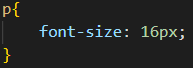
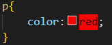
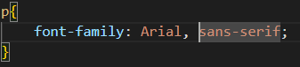
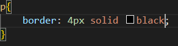

Principe des feuilles de style CSS
Le design d'un site évolue toujours au fil du temps. Le problème, lorsqu'on n'utilise pas de feuilles de style, c'est qu'il faut reprendre toutes les pages html une à une pour modifier une police de caractère ou une couleur de fond...
Avec les "Cascading Style Sheets" (CSS), ce lourd handicap est résolu.
C'est dans la feuille de style CSS que l'on va déclarer toute la mise en forme des pages : le positionnement des éléments, l'image de fond, les polices de caractère, les couleurs, etc.
Celle-ci sera liée à chaque page html. Ainsi, lorsqu'on en modifiera un élément, cela se répercutera immédiatement sur toutes les pages html. Puissant, pratique, bref : indispensable.

Les bases de CSS:
CSS est constitué d'une série de règles, chacune composée d'un sélecteur et d'un bloc de déclarations. Le sélecteur identifie l'élément HTML ou les éléments auxquels la règle s'applique, tandis que le bloc de déclarations contient une ou plusieurs déclarations qui spécifient les propriétés de style et les valeurs à appliquer à ces éléments.
Par exemple, la règle CSS suivante définit la taille de police de tous les paragraphes à 16 pixels :

Dans cette règle, p est le sélecteur, et font-size: 16px est le bloc de déclarations.
Sélecteurs de base :
CSS fournit une variété de sélecteurs pour cibler des éléments HTML spécifiques, des classes, des ID et d'autres attributs. Certains sélecteurs courants comprennent :
- Sélecteur universel :
-
Sélectionnez tous les éléments. En option, il peut être limité à un espace de noms spécifique ou à tous les espaces de noms.
Syntax : * ns|* *|*
Example : * Il correspond à tous les éléments du document.
- Type de Sélecteur :
-
Sélectionne tous les éléments qui ont le nom de nœud donné.
Syntax : elementname
Example : input correspond à n’importe quel élément <input>.
- Sélecteur de classe :
-
Sélectionne tous les éléments qui ont l'attribut de class donnée.
Syntax : .classname
Example : .index correspond à tout élément qui a class="index".
- Sélecteur ID :
-
Sélectionne un élément en fonction de la valeur de son attribut id. Il ne devrait y avoir qu’un seul élément avec un identifiant donné dans un document.
Syntax : #idname
Example : #toc correspond à tout élément qui a id="toc".
- Sélecteur d’attributs :
-
Sélectionne tous les éléments qui ont l'attribut donné.
Syntax : [attr] [attr=value] [attr~=value] [attr|=value] [attr^=value] [attr$=value] [attr*=value]
Example : [autoplay] correspond à tous les éléments qui ont l'attribut autoplay.
Les groupes sélectionnés :
- Liste des sélecteurs :
-
Le , sélecteur est une méthode de regroupement qui sélectionne tous les nœuds correspondants.
Syntax : A, B
Example : div, span correspond à la fois aux éléments <span> et <div>.
etc...
Les Déclarations :
Les déclarations CSS spécifient les propriétés de style et les valeurs à appliquer aux éléments sélectionnés. Certaines propriétés courantes comprennent :
- Couleur : Définit la couleur du texte ou de l'arrière-plan, en utilisant des mots-clés, des valeurs hexadécimales ou des valeurs RVB.

- Police de caractères : Définit la famille de police, la taille, le poids, le style et d'autres propriétés de texte.

- Marge et rembourrage : Définit l'espace autour et à l'intérieur d'un élément, respectivement.

- Bordure : Définit le style, la largeur et la couleur de la bordure d'un élément.

- Largeur et hauteur : Définit les dimensions d'un élément.

etc...